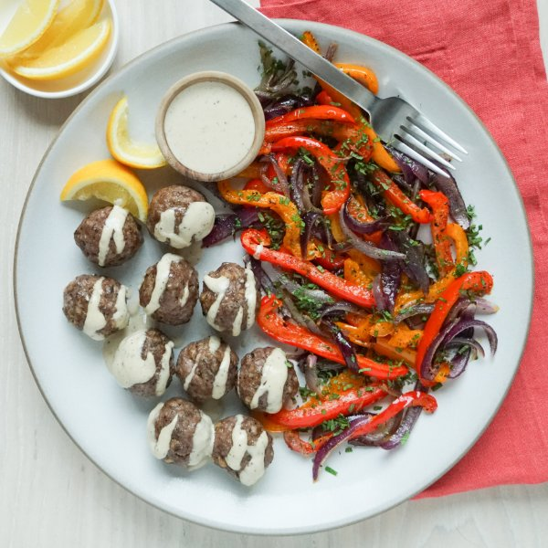

Lebanese-Style Beef Meatballs with Tahini Sauce, Peppers & Onions

Total Time
40 min
Nutrition (per serving)
691.9 kcalCalories
42.6 gProtein
36.4 gCarbs
42.3 gFat
Full nutrition table
| Calories | 691.9 kcal |
| Total fat | 42.3 g |
| Saturated fat | 12.6 g |
| Trans fat | 1.5 g |
| Cholesterol | 197.5 mg |
| Sodium | 338.5 mg |
| Carbohydrates | 36.4 g |
| Fiber | 6.9 g |
| Sugars | 10.4 g |
| Protein | 42.6 g |
| Potassium | 1062.9 mg |
| Calcium | 201.1 mg |
| Iron | 9.4 mg |
| Vitamin A | 348.3 IU |
| Vitamin C | 200.6 mg |
| Vitamin D | 23.1 IU |
Cookware
Ingredients
- 2eggs
- 2 small pkgsfresh mint
- 1 ½ lblean ground beef
- 2lemons
- 2orange bell peppers
- 2red bell peppers
- 2 mediumred onions
- black pepper
- cayenne pepper
- cinnamon, ground
- cumin, ground
- extra virgin olive oil
- panko bread crumbs
- salt
- tahini
Steps
- Preheat oven to 425°F.
- Wash and dry the fresh produce.2 red bell peppers
2 orange bell peppers
2 small pkgs fresh mint
2 lemons - Trim, seed, and slice bell peppers lengthwise into thin strips. Transfer to a large baking sheet pan.
- Peel, halve, and slice onions lengthwise into thin strips; add to the baking sheet with the peppers. Drizzle veggies with oil, then season with salt and pepper; toss to coat and spread out in an even layer.2 medium red onions
4 tsp extra virgin olive oil
½ tsp salt
½ tsp black pepper - Place baking sheet in the oven (it doesn't have to be fully heated) and roast until veggies are starting to soften, 10-12 minutes.
- Meanwhile, pick mint leaves off the stems; discard stems and mince the leaves. Place half in a medium bowl. (Reserve the other half for serving.)
- Add beef, bread crumbs, eggs, and spices to the bowl with the mint; use your hands to combine the beef mixture. Using a tablespoon, form the mixture into rounded meatballs and place on a plate.1 ½ lb lean ground beef
1 ½ cup panko bread crumbs
2 eggs
1 ½ tsp cumin, ground
1 tsp cinnamon, ground
1 tsp salt
½ tsp black pepper
½ tsp cayenne pepper - When the veggies are soft, remove from the oven. Add meatballs to the baking sheet, nestling them into the veggies.
- Return baking sheet to the oven and continue to roast until the veggies are golden brown and meatballs are cooked through, about 12 minutes. Remove from oven.
- Meanwhile, juice one lemon into a small bowl. Cut remaining lemon into wedges and set aside for serving.
- Add tahini, water, pepper, and salt to the bowl with the lemon juice. Whisk to combine the sauce.¼ cup tahini
¼ cup water
½ tsp black pepper
⅛ tsp salt - Divide veggies and meatballs between plates; drizzle meatballs with tahini sauce and sprinkle veggies with reserved mint. Serve with lemon wedges for squeezing. Enjoy!